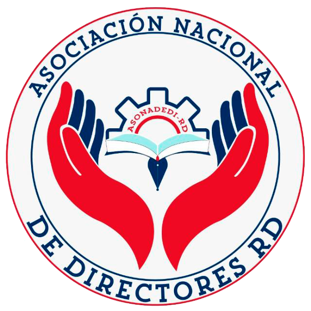

♡
Bienestar Directivo
Equilibrio emocional, manejo del estrés, autocuidado y liderazgo saludable.

ASONADEDI-RDAsociación Nacional de Directores“Bienestar para liderar, liderazgo para transformar”

El VI Congreso Internacional de Gestión Educativa ASONADEDI-RD 2026 será un espacio de formación, reflexión, intercambio de experiencias e innovación dirigido al fortalecimiento del liderazgo y la gestión educativa.
CONOCE EL CONGRESO ❯Equilibrio emocional, manejo del estrés, autocuidado y liderazgo saludable.
Acompañamiento docente, gestión curricular y mejora de los aprendizajes.
Herramientas digitales e IA aplicadas a la gestión educativa.
Datos, evidencias y toma de decisiones para transformar los centros educativos.

Conferencia Magistral

Segunda Conferencia

“Más allá del cargo: carácter, virtudes y valores que transforman”

“Dueño de mi tiempo: el arte de liderar sin dejar de vivir”
Fotografías oficiales pendientes de incorporar.
Dos jornadas de aprendizaje, conexión y liderazgo educativo.
Conferencias, paneles e intercambio de experiencias.
Talleres simultáneos y experiencias de formación.
Horarios y agenda detallada sujetos a confirmación por la organización.
DEMOSTRACIÓN: la recepción de inscripciones y comprobantes todavía no está habilitada. No realices pagos ni envíes información personal a través de esta página.
Datos informativos para la demostración. El costo previsto es RD$ 2,500.00. No realices pagos hasta que ASONADEDI-RD anuncie oficialmente la apertura de inscripciones.
ASONADEDI-RD · Asociación Nacional de Directores de Centros Educativos Públicos de la República Dominicana.
La inscripción se confirma únicamente después de verificar el comprobante de pago. Contacto oficial: pendiente de configurar.